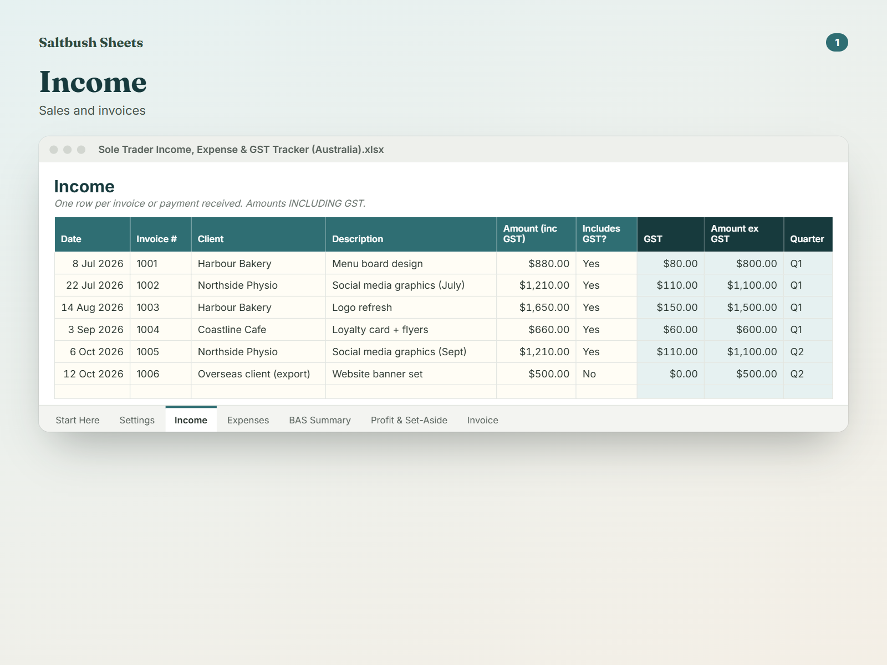
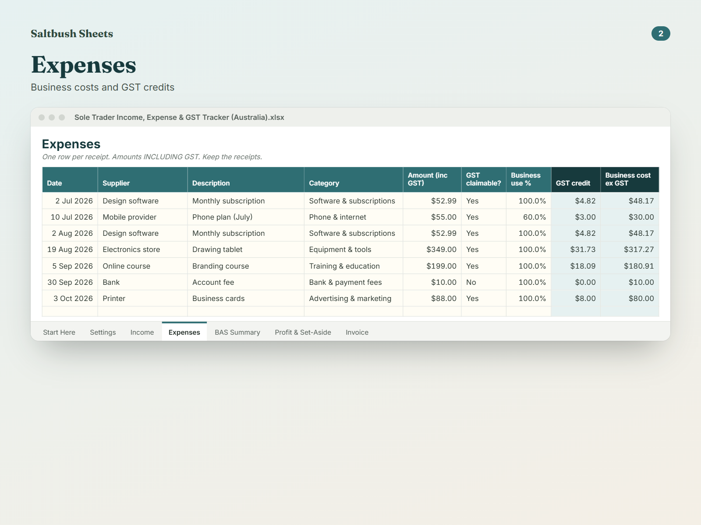
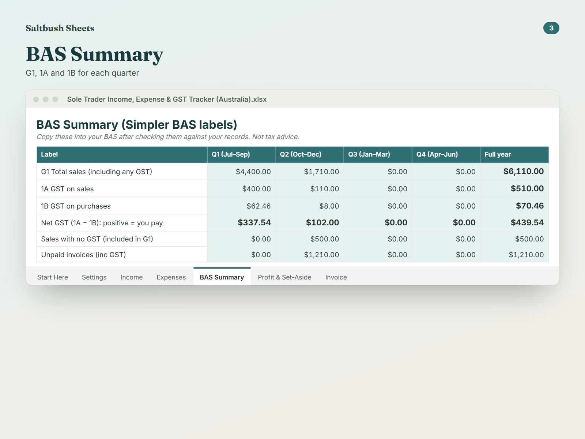

Your BAS figures ready every quarter, and the tax set-aside worked out
Simple bookkeeping for Aussie sole traders: GST worked out for you, quarterly Simpler BAS figures, profit and tax set-aside.
- GST and ex-GST worked out on every invoice and expense
- Simpler BAS labels G1, 1A and 1B for each quarter
- A tax set-aside figure so tax time isn't a shock
- Business-use % for mixed expenses like phone and car
- A printable tax invoice built from your own details
Launch week: 20% off with code LAUNCH20 at checkout, until Mon 2 Nov, 11:59pm Perth time.
See it working
In the example, a designer's Q1 shows G1 sales $4,400, 1A GST $400, 1B GST credits $62.46 and net GST $337.54. Year to date it says keep $1,660.91 aside for GST and tax.
What you get
- Excel workbook (.xlsx) that also opens in Google Sheets
- Printable PDF tax invoice layout
- Start Here tab with step-by-step instructions
- Example data (easy to clear)
Features
- Income log with automatic GST, ex-GST amount and FY quarter
- Expense log with categories, GST credits and business-use %
- BAS Summary: G1, 1A, 1B and net GST for Q1–Q4 and the full year
- Profit and tax set-aside calculator with a month-by-month view
- Unpaid invoice and missing-receipt alerts
- Printable tax invoice that uses your business details
- Set up for the Australian 1 July financial year
Who it's for
- Australian sole traders and freelancers
- Tradies and service businesses
- Side hustlers registered for GST
About this template
Made for Australian sole traders, freelancers, tradies and side-hustlers who don't need full accounting software but do need their records sorted for BAS and tax time.
Log each invoice and receipt once. The sheet splits out the GST (1/11 of GST-inclusive amounts), sorts every row into the right financial-year quarter, and adjusts GST credits for business-use % (like a phone you also use personally).
The BAS Summary tab shows the three Simpler BAS figures for each quarter: G1 total sales, 1A GST on sales and 1B GST on purchases, plus your net GST. The Profit tab shows profit so far, month by month, and how much to keep aside for GST and income tax.
A simple Tax Invoice tab pulls your business name and ABN from Settings so you can bill clients in minutes. This is a record-keeping tool, not tax advice, and it doesn't lodge anything for you.
Is it worth it?
A$19 once, no monthly bookkeeping fee. Works in Excel or the free Google Sheets, instant download, prices in AUD.
Digital download only: nothing is posted to you. Example data is included and easy to clear.
Questions
Is this tax advice?
No. It's a tool to keep your records organised. Check the ATO website or a registered tax or BAS agent before you lodge.
Does it lodge my BAS?
No. It shows the figures; you enter them yourself in ATO Online services or give them to your agent.
I'm not registered for GST. Is it still useful?
Yes. Set 'Registered for GST' to No and mark rows as not including GST. You still get income, expenses, profit and a tax set-aside.
Cash or accrual?
It uses the date on each row. If you report on a cash basis, enter the date you were paid.
Do I need Excel?
No. It works in Google Sheets (free) or Excel.
Can I get a refund?
Because it's an instant digital download, there are no change-of-mind refunds. If the file is faulty or not as described, contact us and we'll fix it, replace it or refund you.
Q2 (Oct–Dec) is under way: set it up now and your next BAS figures are ready when the quarter ends.